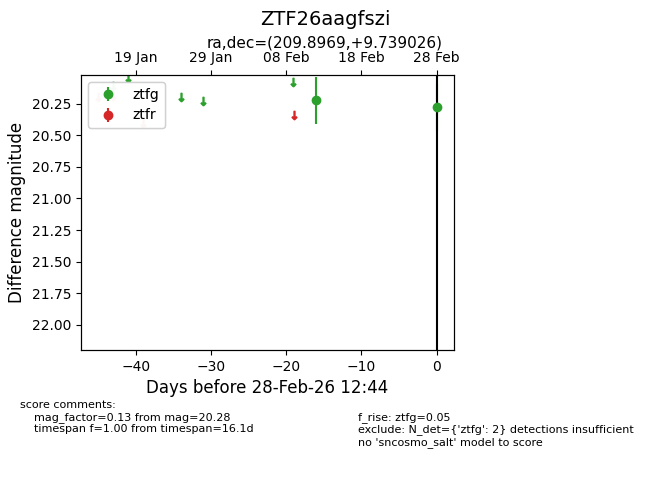
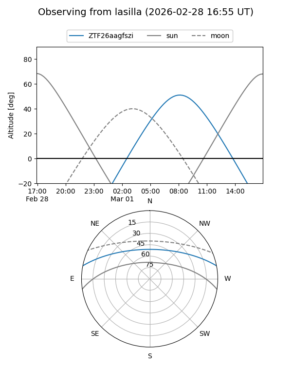
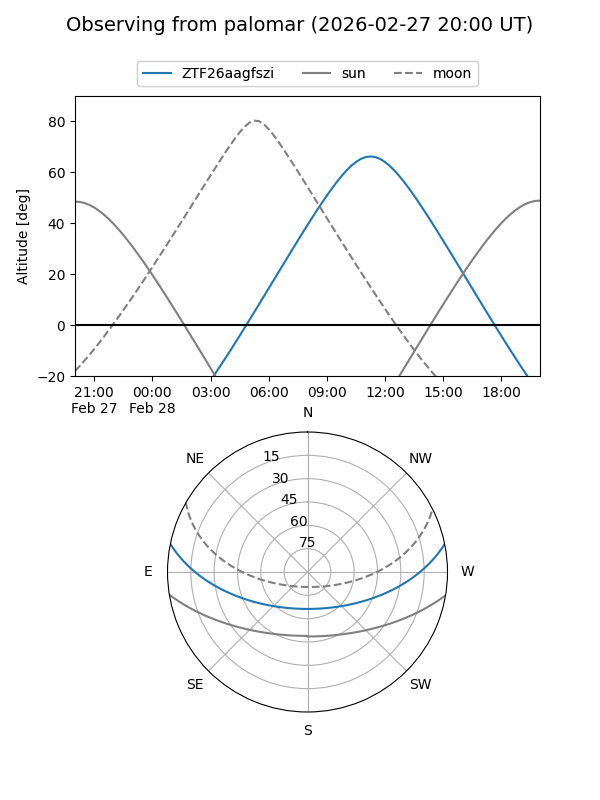

ZTF26aagfszi
Target ZTF26aagfszi at 2026-02-28 12:45
Aliases and brokers:
FINK: link
Lasair: link
ALeRCE: link
alt names
ZTF26aagfszi (ztf,fink_ztf)
Coordinates:
equatorial (ra, dec) = 209.8969,+9.73903
equatorial (HMS+DMS) = 13:59:35.26,+09:44:20.49
galactic (l, b) = (348.9040,+66.31974)
Flags:
Photometry:
last ztfg=20.28
2 ztfg detections
Lightcurve

Visibility


Additional plots